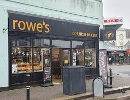
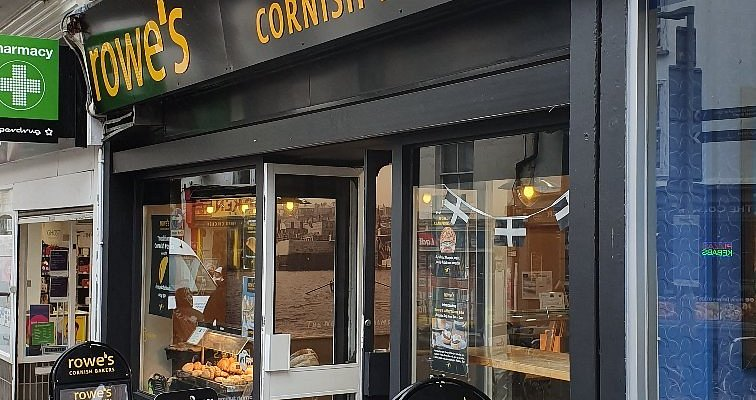
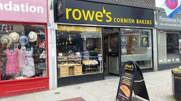

Visit Hogen Oven across Cornwall for fresh bakes, sweet treats and local events.

Our main bakery in Truro serves fresh pasties, brownies, cupcakes and sweet treats every day.
📍 Near Lemon Quay
🕒 Mon–Sat: 8am – 5pm
☕ Indoor seating available

Catch our pastel pink van at local events, festivals and beach weekends around Falmouth.
📍 Events Square & Gylly Beach
🕒 Mon–Sat: 8am – 5pm

During summer holidays we open a small pop-up dessert stand near the harbour.
🌞 Summer only
🕒 Mon–Sat: 8am – 5pm